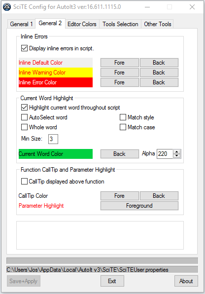

SciTEConfig |
Previous Top Next |
The utility has 5 tabs which allow the setting of various options within SciTE4AutoIt3:
Explorer AU3 File Setting:
When installing Autoit there is an option to either run or edit .au3 files when they are opened in Explorer. This allows you to change that option.
Backup Strategy:
SciTE can keep backup copies of your script each time you amend it and then save, run or compile - if you have more than one they are named "filename.au3.#.bak". You can also set the auto-propercasing of AutoIt keywords.
AutoIt3 Folder Settings:
The label displays the current home folder for the AutoIt install. The input allows you to set a User Include folder to hold any UDFs that you download or create - see User UDFs and CallTips for more details.
AutoIt Script Font:
Use these options to select the font used - the default is 10pt Courier. Selecting "Use Tabs" will set the automatic tab setting for the editor.

Inline Errors:
Set the colour for the highlight errors and warnings from Au3Check - and whether they are to appear.
Current Word Highlight:
Set whether SciTE will highlight all instances of the currently selected text. Further options allow the text to be closely defined along with the highlight colour.
Function CallTip and Parameter Highlight:
When entering the parameters for a function, SciTE will display the relevant parameters and highlight the next required. The position and colour of this calltip can be altered.
Manage Configuration:
Load New Config File. Load a complete configuration file with all settings.
Save Current Configuration File. Save the current setting - you be asked for a filename and whether to overwrite and existing file of that name
Load New Colour Scheme. Load only the colours from a saved configuration file - all other settings remain as currently selected.
On this tab you can select the colours that the SciTE editor will use for various elements of your code. The new colours are applied immediately.
By default all the utilities are displayed in the <Tools> menu. Deselecting a checkbox in the list shown on this tab removes the entry for that tool from the menu but it does not remove the tool itself, which can be added to the menu later if required.
The first two tools allow you to manage your personal Abbreviations and UDF CallTips without fuss - see the more detailed explanations in the links. The third tool extracts specific AutoIt registry settings to help in debugging setup problems - there is no need to run this unless requested when seeking help in the forum.